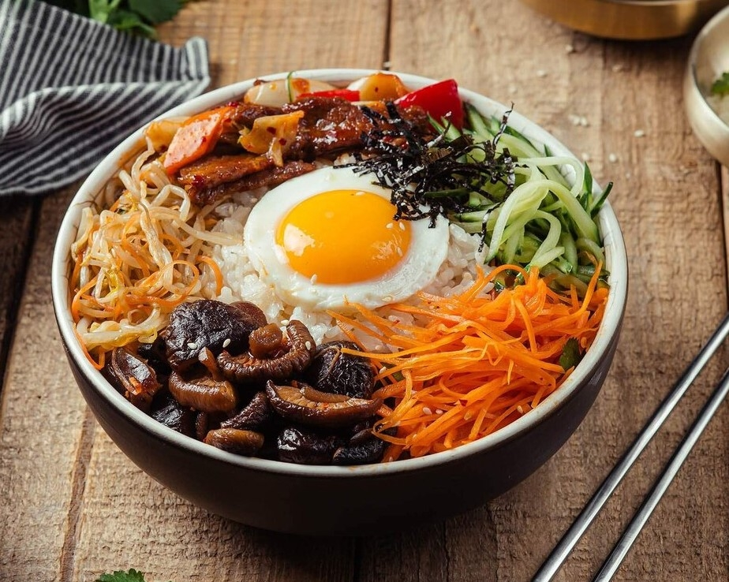
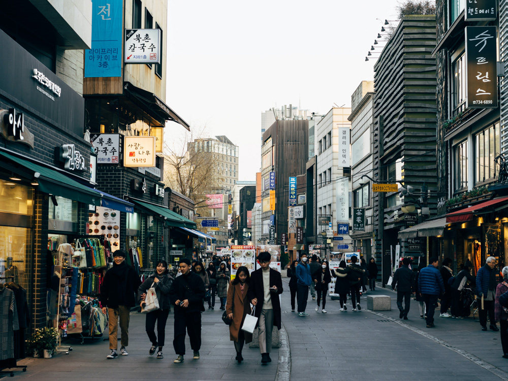

Места с историей
Резные крыши, просторные дворы и яркие узоры. Знакомство с Кореей через её архитектуру.
Дворцы, городские улочки и еда, ради которой стоит свернуть с привычного маршрута. Собираем впечатления и замечаем детали.
Резные крыши, просторные дворы и яркие узоры. Знакомство с Кореей через её архитектуру.

Начнём с пибимпапа: рис, разноцветные овощи и яйцо в одной миске. Перемешать — и пробовать!

Сворачивать в переулки, рассматривать вывески и находить своё любимое место в большом городе.
«Корееведы в полях» — о языке, культуре и повседневной жизни Кореи. Больше наблюдений и историй — в Telegram.
Читать Telegram-канал ↗